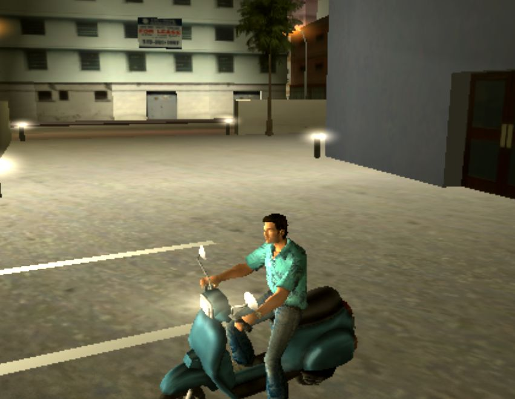
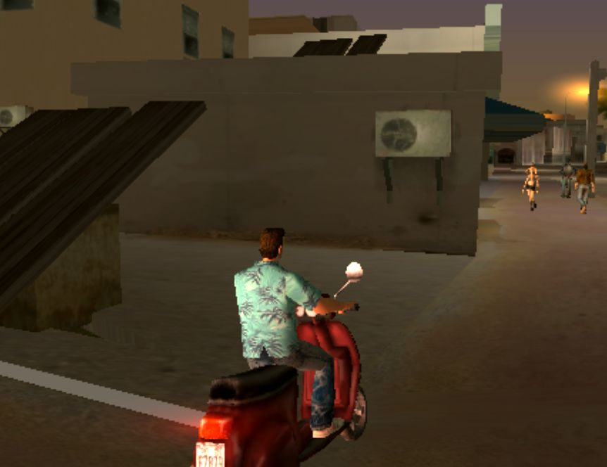
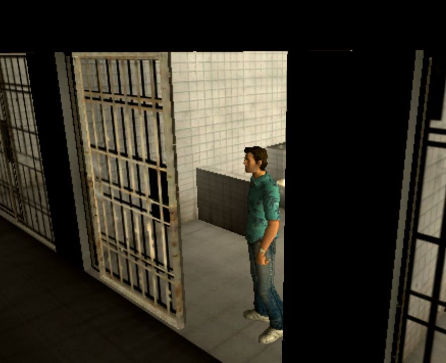
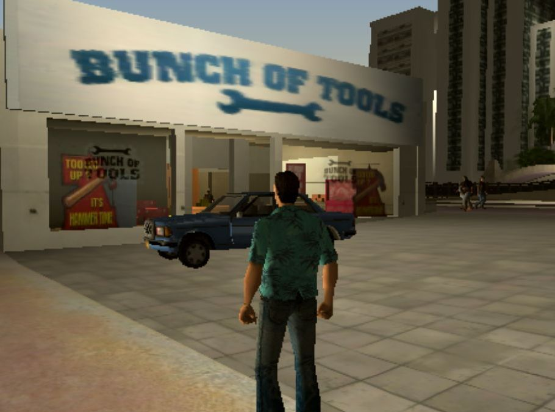
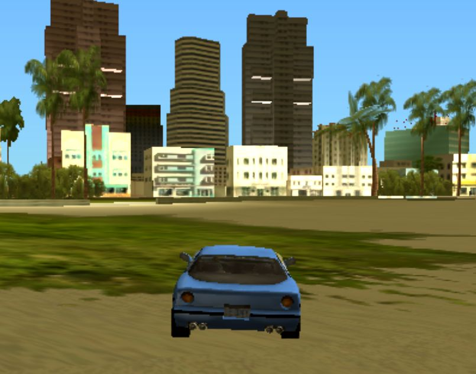
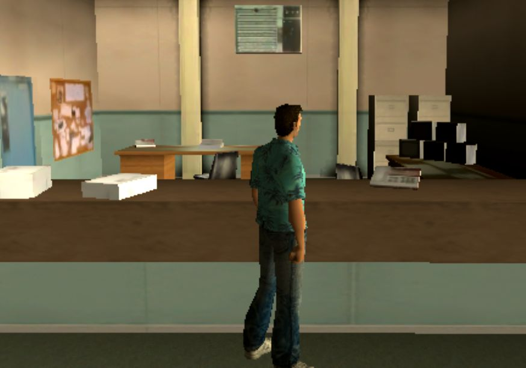
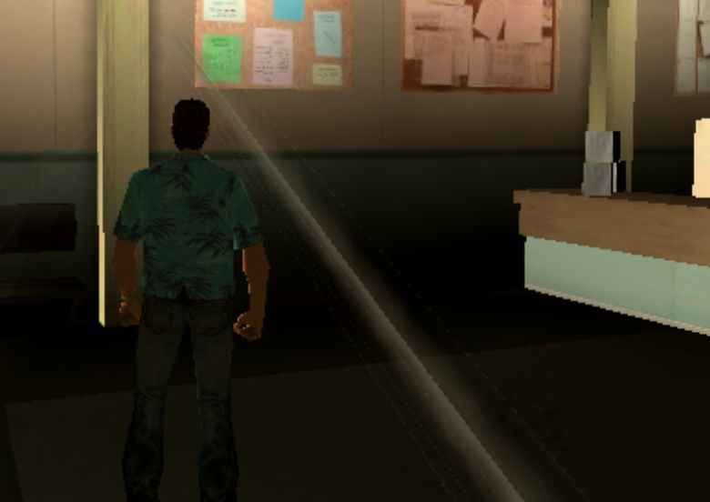
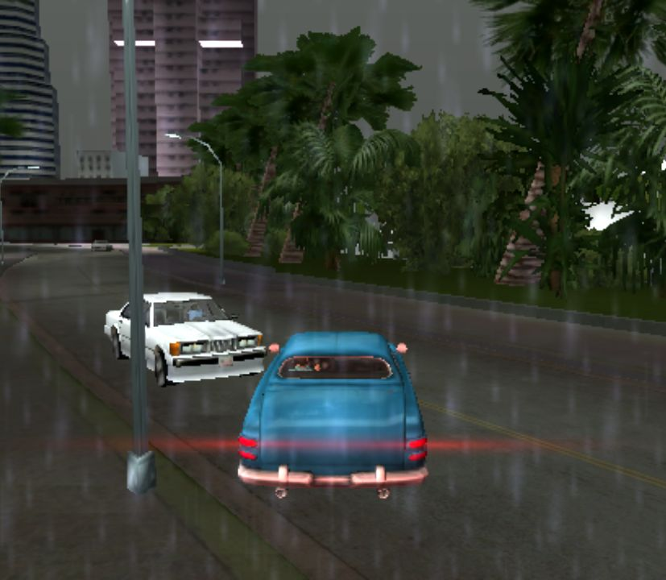
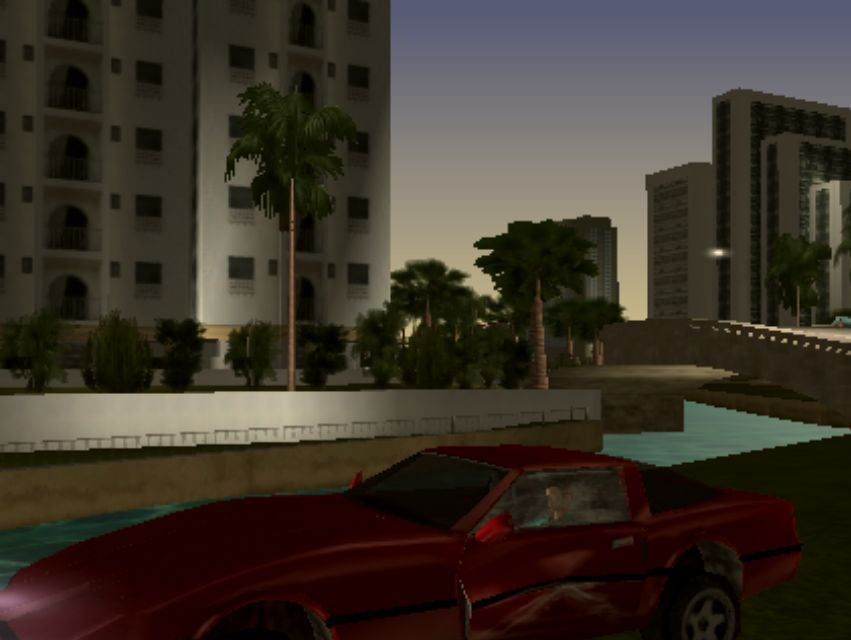

Vice City!

Vice city ; which is actually a name of a game - Android based video game ; which is actually a city and crime related
action game. An exciting game everyone wants to play. But the feeling is different! If you believe 'dream can have
existance' then there was a VICE CITY in reality! The game maybe represents about that old city - vice city!

Going to play this game the feeling was like, the city's last time was with full of crime and with abnormal works like
sexual or this related! Interesting! Going to play this game I went to highway and I felt like the bus and car which was
going to in front of me maybe was coming from that Vice City! Everything is same on this road what I see in normal life
but the 'feeling' was different! I waited there for a few times. A bus stopped near me and an woman came out from that
bus and feeling was like she wants to give me some documents of this distroyed city- Vice City! I was looking at that
woman but she went as a normal passenger. An some ambulances of different times attracted me with a feeling of Vice City!

Suddenly going to think about this during playing, the game gave me a strong feeling about crime related thing. This place
on the photo, there was a building of a woman whom I know and saw here.

But the real story about this city was not a little. In that game, you can go to this room, which gives me a feeling of an
old fearful feel. A city was distroyed for a reason. Very strong and developed city with a age of long time! Too much
interesting if I went to that city! But maybe the city's some parts were around me- I already saw! A pharmacy in front of
my father's pharmacy and a car of a doctor etc!

No! My thinking is being more extend and I think this city was too too old. And maybe it carry something. How strange! I feel
like there was too strong rules. Oh! waht's about cities around me? These cities are nothing to this old distroyed city!
Building , parks, road etc. I got something about this distroyed city! It's really special and feel different!

I felt like I can go different places of this city which was in reality with my idea and feel from the game! So I tried to find my place
from this vice city.
Whatever, form my thoungt the green part seems like Bangladesh! I can feel myself in it! Then I thoungt maybe
there were so many things in this universe. Time is not just only time. It is a lot of thing.

File-cabinet, board, files, telephone etc feels like around us! But go when the time comes, we also go there without lossing memory as
a person of there!

The boad can be shown as result board of my school and again it changed and go to this office as a employee or other govt. board!

Rainy weather, cool feelings, different car of different time's Vice city, lights of the night and we are in the car car give a really
special feeling!

Maybe there made a this designed building behind my school what I was showing to some invisible person which were going with me today!
Maybe vice city tells the past of this place, but where is the name of 'VICE CITY'?
Maybe the names came from something I think from medicine!
-Moloy